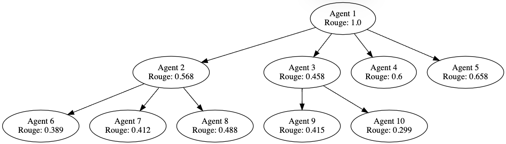
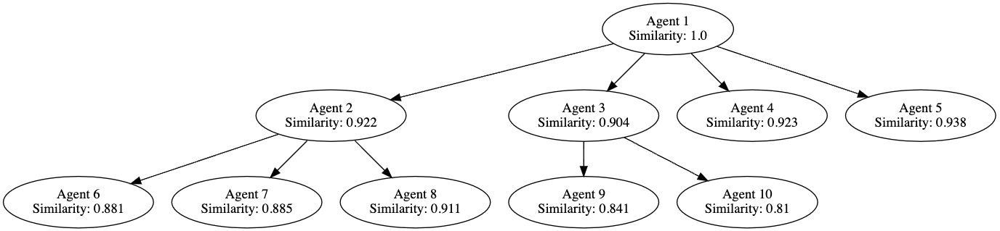
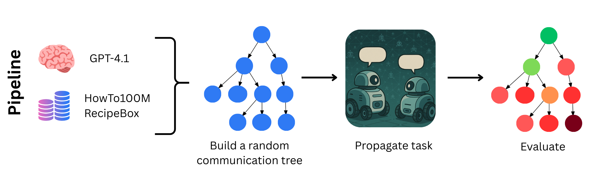
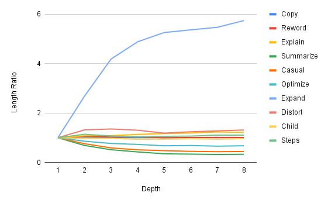
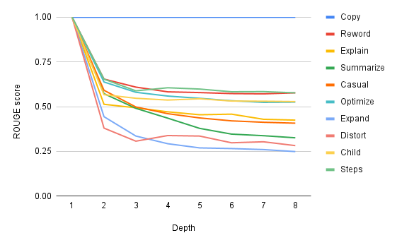
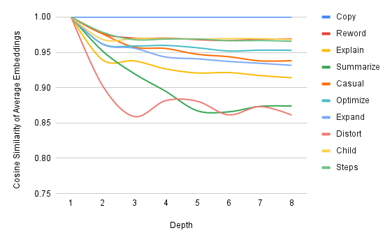

While significant research has focused on the behavior of individual large language models (LLMs), less attention has been paid to how information is transmitted and transformed between them. In human communication, it is well known that stories evolve as they are passed down through speech and writing. Inspired by this phenomenon, we investigate whether LLMs preserve message integrity in a simulated "telephone game" setting. Our study adopts a multi-agent framework motivated by swarm robotics, where distributed agents must share tasks without losing essential information. Experiments using GPT-4.1 reveal that message degradation occurs in distinct ways depending on prompt design.
Our experiments with different prompting strategies reveal how messages change as they propagate through a network of LLMs. Below are visualizations showing how various metrics degrade through message propagation.


Our experiments reveal that even simple prompt variations can lead to significant semantic drift, affecting both message clarity and task success. We tested multiple prompting strategies including copy-paste, rewording, explaining, summarizing, changing tone, optimizing, expanding, distorting, explaining to a child, and breaking into steps. While some strategies preserved meaning better than others, no method was immune to degradation over multiple generations besides direct copy-paste.
What did you try to do? What problem did you try to solve? Articulate your objectives using absolutely no jargon.
Throughout history, human communication demonstrates that information rarely remains unchanged as it passes from person to person. Stories, legends, and historical events evolve over time, shaped by biases, interpretations, and conflicting memories of those who transmit them. The legend of King Arthur illustrates this phenomenon, as it has been told and adapted by many authors throughout centuries. We investigate whether large language models (LLMs) exhibit similar behaviors in information transmission. Using a simulated "telephone game" experiment with multiple successors rather than linear chains, we aim to understand how messages transform as they propagate through a network of AI agents, similar to information spread in human populations.
How is it done today, and what are the limits of current practice?
While extensive research has explored the behavior of individual LLMs, studies on their interaction are relatively limited. Existing research on the telephone game with LLMs primarily focuses on linear chains of transmission. For example, one study by Perez et al. (2024) tracked how text properties like toxicity, positivity, difficulty, and length evolve through iterated interactions between LLMs. Another multilingual study by Mohamed et al. (2025) demonstrated that distortion increases with time and complexity but can be mitigated with strategic prompting. However, these studies are limited to linear chains, which don't accurately reflect how information spreads in real-world populations or collaborative multi-agent systems.
Who cares? If you are successful, what difference will it make?
Understanding information transmission between LLMs has critical implications for collaborative AI systems, particularly in applications like swarm robotics. Imagine a swarm of robots collaborating on a common task, where only one robot receives the initial instructions. If each robot has its own LLM, the message must propagate accurately through the swarm. Any distortion could cause robots to pursue different objectives, compromising collaborative efficiency. Our research not only enhances understanding of LLMs' potential for cumulative cultural evolution and their vulnerability to biases but also provides key insights for designing reliable AI communication systems where message integrity is essential for coordinated action. The findings could inform better agent communication protocols, more robust information sharing mechanisms, and improved task delegation in complex AI systems.
What did you do exactly? How did you solve the problem? Why did you think it would be successful? Is anything new in your approach?
Our research introduces two key innovations in studying LLM information transmission:
We implemented a pipeline that begins by randomly selecting tasks from datasets like HowTo100M (YouTube tutorial transcripts) and RecipeBox (recipe instructions). We then initialize a random communication tree with parameters including depth=8, num_agents=80, and max_children=3, creating a structure where each node has a single parent and 0-3 children.
Starting from the root node, the task propagates through the tree using different prompting strategies: copy-paste, reword, explain, summarize, change tone to casual, optimize, expand, distort, explain to a child, and break into steps. Each node's output becomes the input for its children.

To measure information degradation, we applied three key metrics:
What problems did you anticipate? What problems did you encounter? Did the very first thing you tried work?
We encountered significant challenges when testing with smaller models like LLaMA 3.2-3B and Mistral 7B Instruct. Both showed rapid degradation primarily due to formatting and prompt interpretation issues. Since each model's output became the input for the next agent, consistent formatting was critical. In contrast, GPT-4.1 performed reliably with minimal guidance.
In our second experiment involving problem-solving tasks, we found that explanatory prompts often omitted critical information such as numerical values, rendering many problems unsolvable. Overall, prompt design and formatting had a significant impact on message transmission reliability.
How did you measure success? What experiments were used? What were the results, both quantitative and qualitative? Did you succeed? Did you fail? Why?
We conducted experiments on five distinct randomly generated tasks and tree structures, tracking how messages changed through propagation. Our findings show:



In our problem-solving experiment, we tested whether transformed messages remained functional:
| Outcome | Reword | Explain |
|---|---|---|
| Correct | 80 | 38 |
| Incorrect | 0 | 3 |
| Not enough info | 0 | 39 |
Rewording preserved task accuracy perfectly (80/80 correct), while explaining led to a significant performance drop, with only 38 correct responses, 3 incorrect, and 39 lacking enough information to solve the problem.
We investigated how messages change as they propagate through a network of large language models using a branching communication structure and diverse prompting strategies. Our results show that even simple prompt variations can lead to significant semantic drift, affecting both message clarity and task success. Although some strategies preserved meaning better than others, no method was immune to degradation over multiple generations besides direct copy-paste.
Additionally, smaller models like LLaMA 3.2–3B and Mistral 7B struggled with formatting and maintaining message integrity, often leading to confusion or hallucination. These findings highlight the difficulty of ensuring reliable communication in multi-agent LLM systems.
While our work does not pose immediate societal risks, in the future, as swarm robotics becomes more advanced, unreliable communication among LLMs could lead to failures in critical applications. Future directions include exploring dynamic feedback, bidirectional communication, and deploying these methods in physical multi-agent environments, such as robot swarms engaged in collaborative tasks.